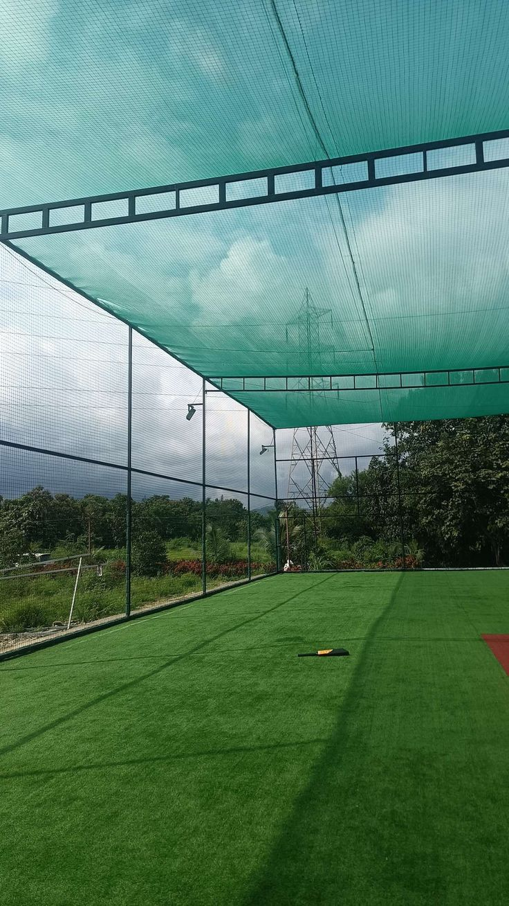
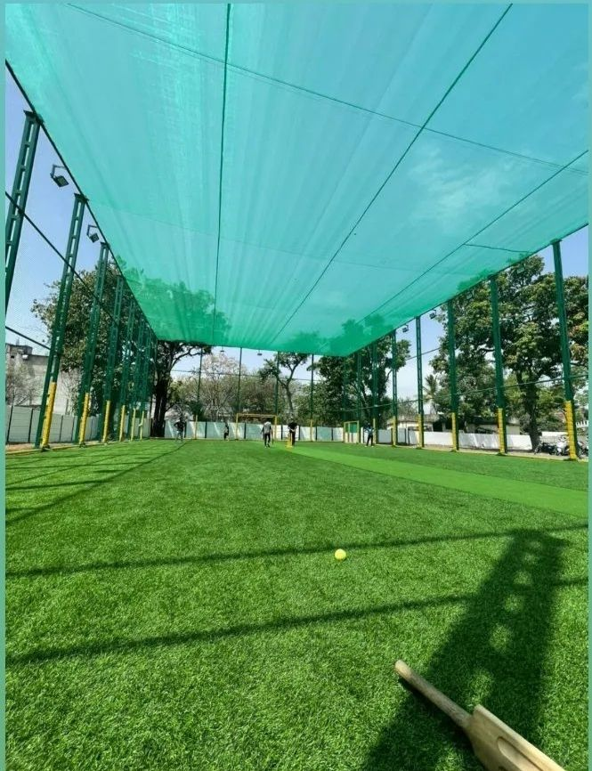
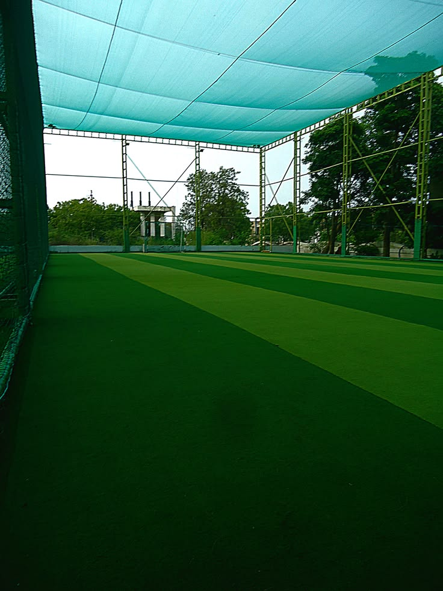
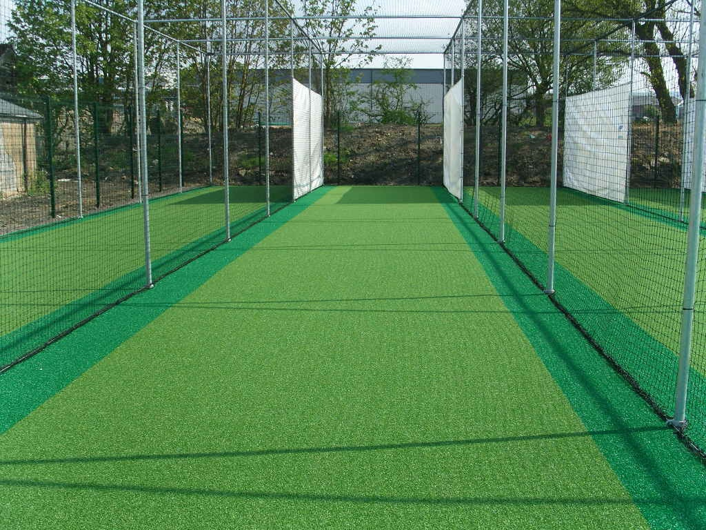
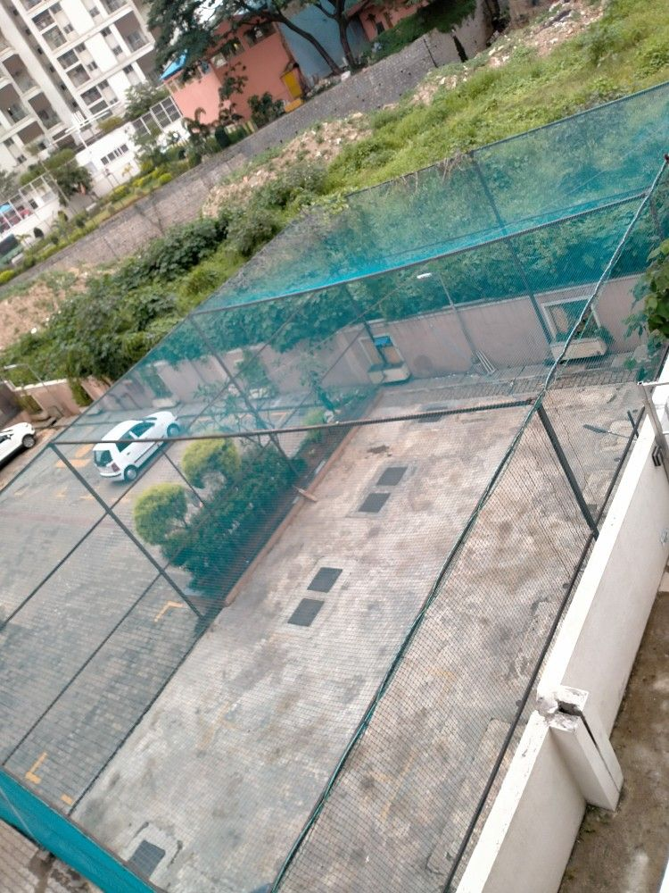

Simon Sports Nets provides dependable cricket safety nets in Bengaluru for cricket academies, schools, colleges, clubs, training centres, and recreational sports areas. Our cricket netting solutions are designed for different practice and playing environments.
Cricket facilities looking for cricket protection nets in Bengaluru can enquire about suitable netting for batting areas, bowling zones, training grounds, and practice courts. Simon Sports Nets provides options based on the available space and intended application.
Our range includes cricket safety netting, cricket practice safety nets, cricket ground safety nets, and cricket training nets in Bengaluru. These solutions can be used by sports academies, schools, clubs, apartment communities, and private cricket practice areas.
Simon Sports Nets serves customers across Bengaluru, including Whitefield, Electronic City, Marathahalli, Bellandur, Sarjapur Road, HSR Layout, Koramangala, Indiranagar, JP Nagar, Jayanagar, BTM Layout, Hebbal, Yelahanka, Thanisandra, KR Puram, Brookefield, Bannerghatta Road, Banashankari, Arekere, Amruthahalli, Kalyan Nagar, Malleshwaram, and Rajajinagar.
Customers searching for cricket safety nets near me, cricket net suppliers in Bengaluru, or cricket protection netting near me can contact Simon Sports Nets for suitable sports-netting requirements.
Whether the requirement is for a cricket academy, school playground, sports club, training facility, apartment court, or private practice area, Simon Sports Nets provides cricket safety net solutions in Bengaluru for different sports applications.
Simon Sports Nets offers cricket safety nets in Bengaluru for practice grounds, cricket academies, schools, clubs, gyms, and sports facilities. The netting can help create a defined playing area around cricket practice and training zones.
Our cricket safety netting in Bengaluru is suitable for batting practice areas, bowling lanes, training courts, and recreational cricket spaces. Customers can select suitable netting according to the court layout, available space, and intended usage.
We provide solutions for cricket academy safety nets, school cricket safety nets, cricket club safety netting, and cricket practice protection nets. These applications can be used for regular training as well as recreational cricket activities.
Simon Sports Nets provides service across Whitefield, Electronic City, Marathahalli, Bellandur, Sarjapur Road, HSR Layout, Koramangala, Indiranagar, JP Nagar, Jayanagar, BTM Layout, Hebbal, Yelahanka, Thanisandra, KR Puram, Brookefield, Bannerghatta Road, Banashankari, Arekere, Amruthahalli, Kalyan Nagar, Malleshwaram, and Rajajinagar.
If you are searching for the best cricket safety nets in Bengaluru, cricket safety nets near me, or cricket protection nets near me, Simon Sports Nets provides suitable solutions for different cricket and sports facilities.
From dedicated cricket academies and school grounds to residential practice areas and sports clubs, Simon Sports Nets provides reliable cricket safety netting solutions in Bengaluru for a wide range of applications.
Expert fitting with proper tension and durable finishing.
Strong, weather-resistant nets suitable for all sports applications.

Fifteen years of precision installation. Twelve signature solutions engineered for Bengaluru homes, apartments, villas and industrial spaces.


With years of experience serving Bengaluru, Simon Sports Safety Nets provides reliable and professional sports safety net installation services in Bengaluru for cricket grounds, cricket practice nets, schools, colleges, academies, sports clubs, playgrounds, apartments, villas, gyms, stadiums, and commercial sports facilities. We specialize in cricket nets, cricket practice nets, football safety nets, badminton nets, volleyball nets, tennis nets, and multi-sport safety netting designed to provide protection and help contain sports balls within the playing area.
Every sports net installation is planned according to the sport, playing area, required coverage, and installation structure. We provide cricket practice net installation, cricket ground safety nets, football ground nets, badminton court nets, volleyball court nets, tennis court nets, and customized sports netting solutions. Our experienced installation team focuses on proper measurements, strong fixing, suitable net selection, neat fitting, and reliable performance for regular training and recreational use.
Whether you need cricket nets for a school, cricket practice nets for an academy, sports safety nets for a playground, ball-stop nets for a sports ground, or a custom sports net installation for a residential or commercial facility, Simon Sports Safety Nets provides practical solutions based on your requirements. We serve customers across Bengaluru, including Whitefield, Electronic City, HSR Layout, Koramangala, Indiranagar, Marathahalli, Bellandur, Sarjapur Road, JP Nagar, Jayanagar, BTM Layout, Yelahanka, Hebbal, Bannerghatta Road, KR Puram, Brookefield, Banashankari, Rajajinagar, Basavanagudi, Vijayanagar, Hennur, Horamavu, Bommanahalli, Bommasandra, Chandapura, Arekere, Begur, Domlur, Frazer Town, Cooke Town, RT Nagar, Ramamurthy Nagar, Thanisandra, Kalyan Nagar, Kengeri, Uttarahalli, Kanakapura Road, and surrounding areas.

Projects Completed
Customer Satisfaction
Professional Services
Support Available
A curated look at recent safety net projects across Bengaluru — from balconies to industrial roofs.




Simon Sports Safety Nets provides reliable, affordable, and professional sports safety net installation in Bengaluru for cricket academies, schools, colleges, sports clubs, playgrounds, stadiums, gyms, residential communities, and commercial sports facilities. We specialize in providing customized netting solutions designed to improve safety and help contain sports balls within designated playing and training areas.
We specialize in Cricket Practice Nets, Cricket Training Nets, Cricket Ground Safety Nets, Football Safety Nets, Badminton Nets, Volleyball Nets, Tennis Nets, Basketball Nets, Multi-Sport Safety Nets, and Ball Stop Nets. Our sports netting solutions are selected according to the sport, playing area, required coverage, height, and installation structure. Every sports net installation is carried out by skilled professionals with accurate measurements, strong fixing, proper positioning, and neat finishing.
At Simon Sports Safety Nets, we understand that every sports facility has different requirements. Whether you need cricket nets for an academy, cricket practice nets for a school, football nets for a playground, badminton court nets, tennis court nets, or a custom sports safety net solution, we provide practical options based on your available space and requirements. Our focus is on quality sports nets, professional installation, strong and secure fixing, customized solutions, and reliable service.
Simon Sports Safety Nets provides sports net installation services across Bengaluru, including Whitefield, Electronic City, HSR Layout, Koramangala, Indiranagar, Marathahalli, Bellandur, Sarjapur Road, JP Nagar, Jayanagar, BTM Layout, Yelahanka, Hebbal, Bannerghatta Road, KR Puram, Brookefield, Banashankari, Rajajinagar, Basavanagudi, Vijayanagar, Hennur, Horamavu, Bommanahalli, Bommasandra, Chandapura, Arekere, Begur, Domlur, Frazer Town, Cooke Town, RT Nagar, Ramamurthy Nagar, Thanisandra, Kalyan Nagar, Kengeri, Uttarahalli, Kanakapura Road, and surrounding areas. Whether you are searching for cricket nets near me, sports safety nets in Bengaluru, cricket practice net installation, or sports net installation near me, Simon Sports Safety Nets provides customized netting solutions for sports facilities across Bengaluru.